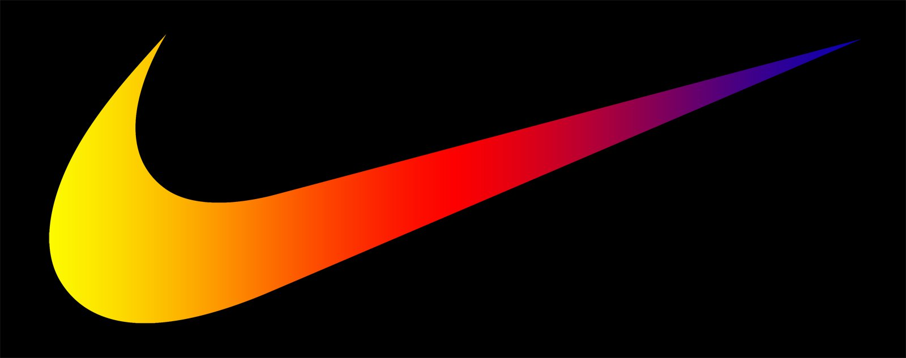
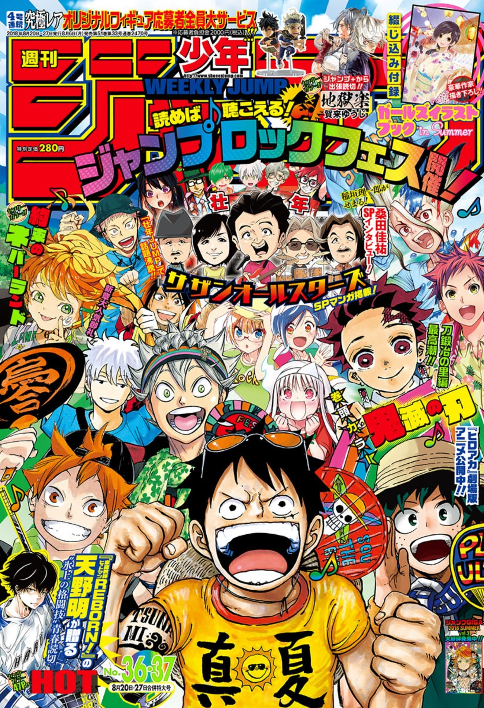

Perhaps a common choice, Nike is one of my favorite brands. As long as I can remember, I’ve been seeing the Nike brand all around me, shoes and hoodies littered my closet from childhood into adulthood. In my middle school years it seemed like having nice shoes was the secret to being cool, so me being the cool kid I am, I’d always ask my parents to get me some Nikes whenever I needed new shoes. Looking back on it now with a little more media literacy, it’s not hard to see that Nike is just amazing at advertising to young people, but that doesn’t change the fact that it’s something I feel comfortable wearing; brand loyalty achieved. These days, as a 20-year-old, I have other sentimental attachments to the Nike brand; my girlfriend is absolutely in love with Nike Air Forces. Her attachment to this brand naturally transfers to me, and with all these attachments I have to Nike, I often have an overwhelmingly positive view on their products, even if it’s not shoes. Any accessories like hats, socks, or headbands that I seek out are usually going to be Nike. I believe the sense of familiarity I have with that brand is simply due to being surrounded by it in all aspects of my life. For better or worse I do love Nike.


Getting a little more niche, Shonen Jump just might be my absolute favorite brand. I’ve watched a lot of TV shows and animes in my life, but nearly all of my favorite ones are Shonen Jump properties. I first got into anime back in the summer of 2019 when my friends introduced me to One Punch Man. At first I was afraid of the stigma surrounding anime manga properties, but once I gave it a shot I fell in love with anime. One Punch Man was my first exposure to the entire genre, but more specifically to Shonen Jump. Over time I would explore more and more anime properties and I found that most of my favorites were published in Weekly Shonen Jump. Demon Slayer, Naruto, Hunter x Hunter, My Hero Academia, Bleach, Jujutsu Kaisen, and my absolute favorite One Piece are all published through Shonen Jump. These properties influence me heavily when I’m out shopping for things I don’t need; trivial things always end up in my cart, things like posters, lights, pillows, figures, and other decorative things that I spend too much money on, and it’s all because I enjoy these properties so much. I feel like half of being a part of the communities surrounding these properties is having merchandise with the logo attached to it. Often, it’s a conversation starter. Someone else who likes the show that I happen to have branded on my shirt will be delighted to see someone who shares their special interest, and I love that about wearing these brands, it opens a door to some amazing social interactions with brand new people that otherwise wouldn’t have paid any attention to me.